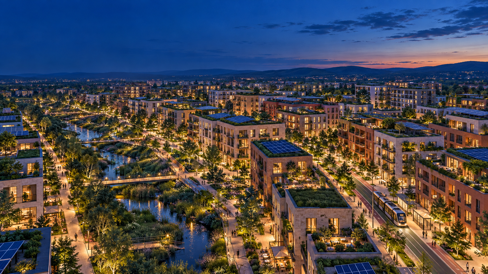
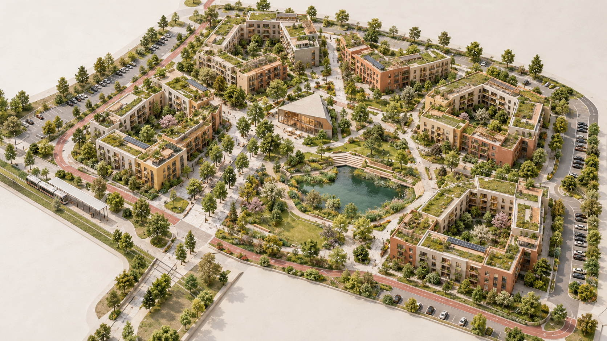
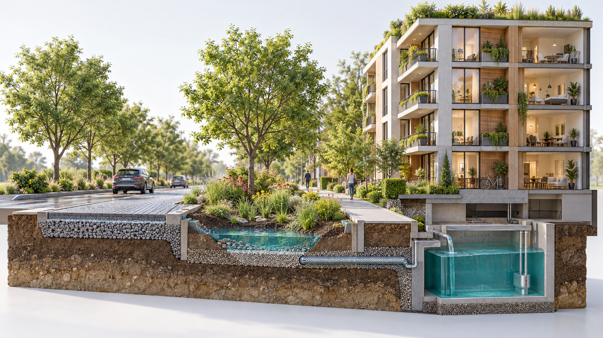
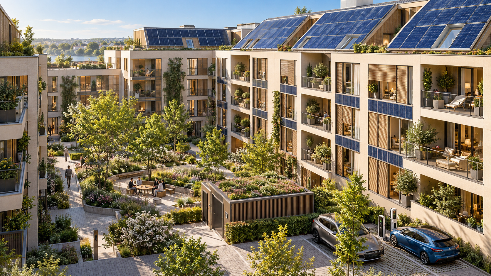
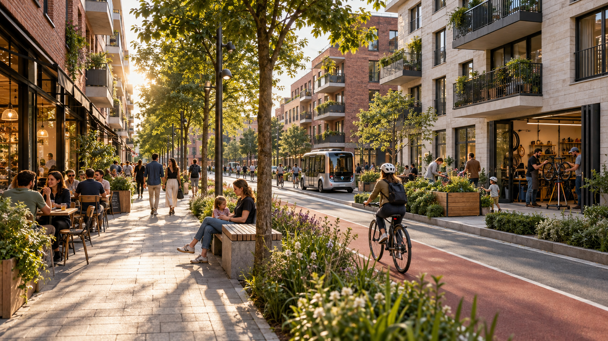
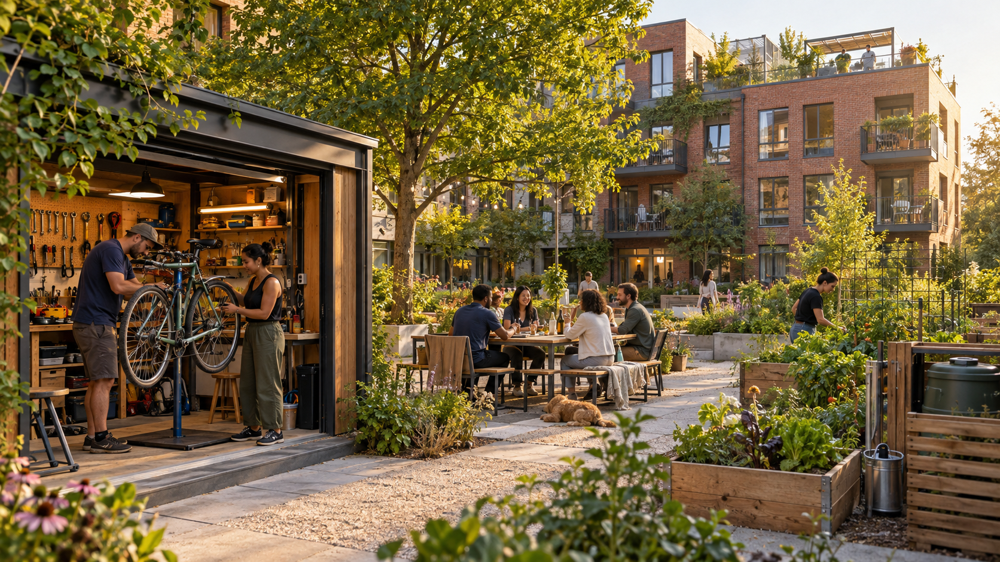

Okos lámpaoszlopok
Levegőminőség-mérés
Igényhez igazított világítás

A jövő lakónegyede
Egy képzeletbeli okosváros terve
Kiindulás
Térbeli terv
Gyalog vagy kerékpárral elérhető mindennapi szolgáltatások

Szivacsváros
Esőkert és vízáteresztő burkolat
Tetőkről gyűjtött csapadékvíz
Tisztítás után, külön rendszerben
Nagy esőnél szabályozott túlfolyó szükséges.

Fogyasztás és termelés
Szigetelés, árnyékolás, takarékos gépészet
BIPV: napelemként működő épületelemek
Termelés, tárolás és töltés összehangolása
Zéró emisszió: hosszú távú cél. Hálózati kapcsolat megmarad.

Technológia a gyakorlatban
Levegőminőség-mérés
Igényhez igazított világítás
Telítettségjelzés
Igény szerinti begyűjtés
Kijelölt közösségi pontokon
Elektromos járművek töltése
Kijelölt üzemeltető
Rendszeres karbantartás
Későbbi lehetőség: pneumatikus hulladékszállítás, külön költségvizsgálattal.

Közlekedés
Sürgősségi és akadálymentes hozzáféréssel

Közösség
Lakói beleszólás, kijelölt fenntartó
Fiktív városfejlesztési program
Szemléltető keret, nem kivitelezői árajánlat.
Megvalósítás
Részletes terv, egyeztetés, engedélyezés
Épületek, közterek és rendszerek
Legalább egy év tapasztalata alapján